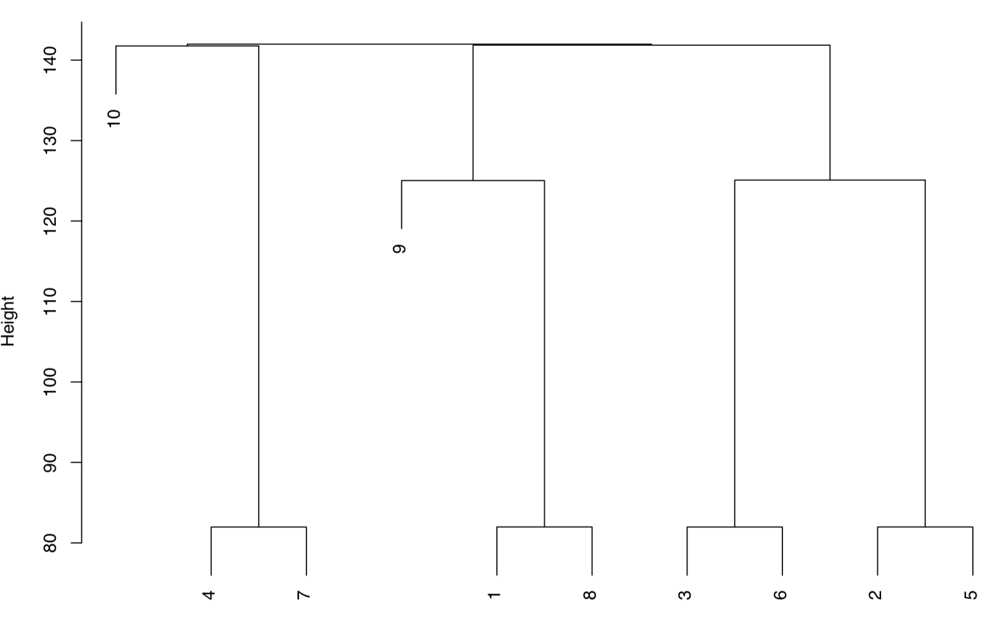

Aligning 2D NMR Spectra Part 3
This is Part 3 of a series on aligning 2D NMR, as implemented in the package ChemoSpec2D. Part 1 Part2
Let’s get to work. The function to carry out alignment is hats_alignSpectra2D. The arguments maxF1 and maxF2 define the space that will be considered as the two spectra are shifted relative to each other. The space potentially covered is -maxF1 to maxF1 and similarly for the F2 dimension. dist_method, thres and minimize refer to the objective function, as described in Part 1. In this example we will consider two spectra succcessfully aligned when we get below the threshold. When one shifts one spectrum relative to the other, part of the shifted spectrum gets cutoff and part of it is empty space. fill = "noise" instructs the function to fill the empty space with an estimate of the noise from the original spectrum. We’ll set plot = FALSE here because the output is extensive. I’ll provide sample plotting output in a moment.
library("ChemoSpec2D")
## Loading required package: ChemoSpecUtils
##
## As of version 6, ChemoSpec2D offers new graphics output options
##
## Functions plotScores and plotScree will work with the new options
## For details, please see ?GraphicsOptions
##
## The ChemoSpec graphics option is set to 'ggplot2'
## To change it, do
## options(ChemoSpecGraphics = 'option'),
## where 'option' is one of 'base' or 'ggplot2' or'plotly'.
data(MUD2)
set.seed(123)MUD2a <- hats_alignSpectra2D(MUD2,
maxF1 = 5, maxF2 = 5,
dist_method = "euclidean", thres = 40, minimize = TRUE,
fill = "noise",
plot = FALSE)This is a beta version of hats_alignSpectra2D.
You should set the seed for reproducible results.
Please check your results carefully, and consider sharing your data
for additional testing. Contact Bryan Hanson via hanson@depauw.edu[ChemoSpec2D] Processing row 1 of 9 from the guide tree:
[ChemoSpec2D] Starting alignment of sample(s) 7
with sample(s) 4
[ChemoSpec2D] Best alignment is to shift F2 by 0 and F1 by -1
[ChemoSpec2D] Processing row 2 of 9 from the guide tree:
[ChemoSpec2D] Starting alignment of sample(s) 6
with sample(s) 3
[ChemoSpec2D] Best alignment is to shift F2 by 0 and F1 by -1
[ChemoSpec2D] Processing row 3 of 9 from the guide tree:
[ChemoSpec2D] Starting alignment of sample(s) 5
with sample(s) 2
[ChemoSpec2D] Best alignment is to shift F2 by 0 and F1 by -1
[ChemoSpec2D] Processing row 4 of 9 from the guide tree:
[ChemoSpec2D] Starting alignment of sample(s) 8
with sample(s) 1
[ChemoSpec2D] Best alignment is to shift F2 by 0 and F1 by -1
[ChemoSpec2D] Processing row 5 of 9 from the guide tree:
[ChemoSpec2D] Starting alignment of sample(s) 1, 8
with sample(s) 9
[ChemoSpec2D] Best alignment is to shift F2 by 2 and F1 by 1
[ChemoSpec2D] Processing row 6 of 9 from the guide tree:
[ChemoSpec2D] Starting alignment of sample(s) 2, 5
with sample(s) 3, 6
[ChemoSpec2D] Best alignment is to shift F2 by 2 and F1 by 0
[ChemoSpec2D] Processing row 7 of 9 from the guide tree:
[ChemoSpec2D] Starting alignment of sample(s) 4, 7
with sample(s) 10
[ChemoSpec2D] Best alignment is to shift F2 by 0 and F1 by 3
[ChemoSpec2D] Processing row 8 of 9 from the guide tree:
[ChemoSpec2D] Starting alignment of sample(s) 2, 3, 5, 6
with sample(s) 1, 8, 9
[ChemoSpec2D] Best alignment is to shift F2 by 0 and F1 by 3
[ChemoSpec2D] Processing row 9 of 9 from the guide tree:
[ChemoSpec2D] Starting alignment of sample(s) 1, 2, 3, 5, 6, 8, 9
with sample(s) 4, 7, 10
[ChemoSpec2D] Best alignment is to shift F2 by -5 and F1 by 0
[ChemoSpec2D] Alignment steps and results:
Ref Mask F2shift F1shift
1 4 7 0 -1
2 3 6 0 -1
3 2 5 0 -1
4 1 8 0 -1
5 9 1, 8 2 1
6 3, 6 2, 5 2 0
7 10 4, 7 0 3
8 1, 8, 9 2, 3, 5, 6 0 3
9 4, 7, 10 1, 2, 3, 5, 6, 8, 9 -5 0As the alignment proceeds, updates from the function are prefixed with [ChemoSpec2D]. In the first step we get a message that row 1 of 9 of the guide tree is being processed, in which sample 7 is being aligned with sample 4. The guide tree is shown below. One can see that samples 7 and 4 are very similar, so they are aligned first. If you inspect the output above, you can see that the four most similar pairs of spectra are aligned first, followed by groups of spectra according to similarity. For each alignment the needed shifts are reported. The last part of the output is a summary of all the alignments carried out. Note that the vertical scale on the guide tree is the same as the scale on the sampleDist plot in Part 1 (using the Euclidean distance).

Diagnostics on Space
To save space, I suppressed the plotting of the results. However, there are plots! In fact there is a set of plots for each alignment step. Here are two of the plots produced if plot = TRUE; these deal with the X-Space which is the search space (the terminology comes from the mlrMBO package which is designed to handle many types of optimization). This plot is for Step 7. The upper plot shows the search space. Axis x1 corresponds to the F1 dimension, and axis x2 the F2 dimension. The red squares represent the initial experimental design, using the results from the objective function. The blue circles represent additional points added as the search proceeds. These represent new points on the response surface defined by the surrogate function (see Part 2 for background). The orange diamond is the best alignment, which in this case has no shift along F2 but a three data point shift along F1; this corresponds to the output above. The green triangle is the last position tested.
The lower plot represents the progress of the search over time. Axis “dob” stands for “date of birth” which is basically the time index of when the test point was added.
Diagnostics on the Objective Function
This second set of plots deals with what mlrMBO considers the Y-Space, which concerns the values of the objective function. The top plot is a histogram of the distance (objective function) values; in this case most of them were pretty bad (high, meaning a larger distance between the spectra). The middle plot is the value of the distance over time (dob). In this example the optimal alignment is found at dob = 4, but there is no particular significance to when the optimum is found. The lower plot shows the expected improvement (ei) at each dob. It is lowest when the optimum has been found. For more details about what’s going on under the hood, see the Arxiv paper.
The Aligned Spectra
Did this process work? This final plot shows that it did. Let’s be clear that the task here was not terribly hard: MUD2 is an artificial example in which the shifts are pretty modest and global in nature. But still, it’s satisfying. I welcome everyone to give hats_alignSpectra2D a try and report any problems or suggestions.
Reuse
Citation
@online{hanson2020,
author = {Bryan Hanson},
title = {Aligning {2D} {NMR} {Spectra} {Part} 3},
date = {2020-03-04},
url = {http://chemospec.org/2020-03-04-NMR-Align-Pt3.html},
langid = {en}
}